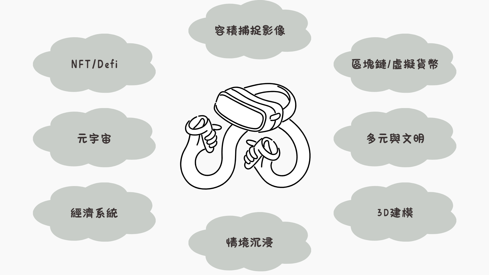

課程介紹
元宇宙是一種虛擬的平行宇宙，擁有與現實世界相似的環境。世新大學資管系運用元宇宙的概念，將其應用於教學中，提供了全新的學習體驗。嘗試讓同學除了在實體教室學習外，還能透過虛擬世界與全球的同學互動，豐富國際視野。
當同學、教授和專業人士在虛擬世界中互動時，將創建虛擬的經濟和社會體系，藉此更好地理解現實世界的運作方式。當然，元宇宙還能提供多元化的資訊，包括產業動態、科技趨勢、就業資訊等，幫助同學更好地理解資訊管理學系所需的知識和技能，以及職場的實際需求。
總結而言，元宇宙是未來教育發展的趨勢，前景可期。世新資管在這個領域超前布局，提供更多元、生動、多樣的學習經驗，幫助同學更好地學習和掌握知識與技能，進而提升其就業競爭力。
課程架構
